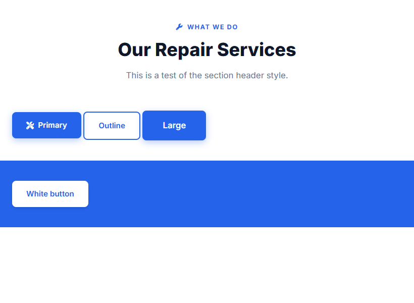

Lesson 6 · Shared Styles & Layout
Buttons, Section Headers & Page Headers
TechFix Pro reuses the same buttons and the same centred “section header” on every page. You will build them once in styles.css as reusable components, test them, and add the dark page-header banner used by the five inner pages.
- About 45 minutes
- Edits:
styles.css,index.html(temporary test)
By the end of this lesson you will be able to
- Build a button system with a base class plus modifier classes.
- Use
display: inline-flex,gapandalign-itemsto line up an icon and text. - Add hover effects with
:hover,transformandtransition. - Create the section header, overline label and page header.
Add the button styles
Add this at the bottom of styles.css:
styles.css/* ============================================
Buttons
============================================ */
.btn {
display: inline-flex;
align-items: center;
justify-content: center;
gap: 0.5rem;
padding: 0.875rem 1.75rem;
border-radius: var(--radius-sm);
font-weight: 600;
font-size: 0.95rem;
transition: var(--transition);
cursor: pointer;
border: none;
white-space: nowrap;
}
.btn-primary {
background: var(--primary);
color: var(--white);
box-shadow: 0 4px 14px rgba(37, 99, 235, 0.35);
}
.btn-primary:hover {
background: var(--primary-dark);
transform: translateY(-2px);
box-shadow: 0 6px 20px rgba(37, 99, 235, 0.45);
}
.btn-outline {
background: transparent;
color: var(--primary);
border: 2px solid var(--primary);
}
.btn-outline:hover {
background: var(--primary);
color: var(--white);
transform: translateY(-2px);
}
.btn-white {
background: var(--white);
color: var(--primary);
box-shadow: var(--shadow);
}
.btn-white:hover {
transform: translateY(-2px);
box-shadow: var(--shadow-md);
}
.btn-lg {
padding: 1rem 2.5rem;
font-size: 1.05rem;
}This is the base + modifier pattern. Every button gets the class btn (the shared shape, padding and font), plus one colour class and, optionally, a size class:
| Classes | Looks like | Where you'll use it |
|---|---|---|
btn btn-primary | Solid blue with a glow | Main actions (“Our Services”, “Book Repair”) |
btn btn-outline | Blue border, transparent inside | Secondary actions (“Get Started”) |
btn btn-white | White, for dark/blue backgrounds | Newsletter “Subscribe”, map “Get Directions” |
… btn-lg | Bigger padding and text | Hero buttons, contact form |
New properties explained
display: inline-flex— the button sits in a line like text (inline), but its contents (icon + words) are laid out with flexbox.align-items: centerlines them up vertically;gap: 0.5remputs a small space between them.cursor: pointer— shows the “hand” pointer on hover.white-space: nowrap— the button text never wraps onto two lines.transform: translateY(-2px)on hover — moves the button up 2 pixels, so it feels like it lifts.transition: var(--transition)— instead of jumping instantly, changes animate over 0.3 seconds.
Add the section header and overline
Most sections start with a small blue label, a big heading and a grey sentence, all centred. Add this at the bottom of styles.css:
styles.css/* ============================================
Section Headers
============================================ */
.section-header {
text-align: center;
margin-bottom: 3.5rem;
}
/* .overline is the small blue label above a heading.
It is used inside AND outside .section-header, so it gets its own rule. */
.overline {
display: inline-flex;
align-items: center;
gap: 0.5rem;
color: var(--primary);
font-weight: 700;
font-size: 0.8rem;
text-transform: uppercase;
letter-spacing: 1.5px;
margin-bottom: 0.75rem;
}
.section-header h2 {
font-size: 2.25rem;
font-weight: 800;
margin-bottom: 1rem;
line-height: 1.2;
}
.section-header p {
color: var(--gray);
font-size: 1.05rem;
max-width: 600px;
margin: 0 auto;
}.section-headercentres everything and adds space below..section-header h2styles only the<h2>inside a section header (a descendant selector).text-transform: uppercaseandletter-spacingturn the overline into small spaced-out capitals.max-width: 600px; margin: 0 auto;keeps the description narrow and centred.
A small improvement on the original
In the original site this rule was written as .section-header .overline, which only works inside a section header. But the Home page's “About Us” label and the About page's “Our Story” label are not inside one, so they appeared unstyled. Writing just .overline fixes both.
Add the page header and breadcrumbs
The About, Services, Blog, Gallery and Contact pages all start with a dark banner showing the page title and a “breadcrumb” trail (Home › About). Add at the bottom of styles.css:
styles.css/* ============================================
Page Header (used by every page except Home)
============================================ */
.page-header {
padding: 140px 0 80px;
background: linear-gradient(135deg, var(--secondary) 0%, #1e293b 100%);
text-align: center;
color: var(--white);
}
.page-header h1 { font-size: 2.75rem; font-weight: 800; margin-bottom: 0.75rem; }
.page-header p { color: var(--gray-light); font-size: 1.1rem; max-width: 600px; margin: 0 auto; }
.breadcrumbs { margin-top: 1.5rem; font-size: 0.9rem; color: var(--gray-light); }
.breadcrumbs a { color: var(--primary-light); }
.breadcrumbs a:hover { text-decoration: underline; }
.breadcrumbs i { margin: 0 0.5rem; font-size: 0.7rem; }padding: 140px 0 80px— a lot of space at the top, because the navbar (Lesson 7) will float over the top 72px of the page.linear-gradient(135deg, …)— a diagonal blend from navy to slightly lighter navy..breadcrumbs a:hover { text-decoration: underline; }— underline the link only on hover.
Shared styling in action
The original site repeats these 12 lines inside the <style> block of five different pages. Putting them once in styles.css means less typing and only one place to fix if you want to change the banner. You will see this banner for real in Lesson 14.
Test the components
In index.html, replace the two test lines from Lesson 4 (the <!-- TEST … --> comment and the <h1>) with this bigger test block:
<!-- PAGE CONTENT GOES HERE -->)<!-- TEST: delete this at the end of Lesson 6 -->
<div class="container" style="padding: 40px 1.5rem;">
<div class="section-header">
<div class="overline"><i class="fas fa-wrench"></i> What We Do</div>
<h2>Our Repair Services</h2>
<p>This is a test of the section header style.</p>
</div>
<a href="#" class="btn btn-primary"><i class="fas fa-tools"></i> Primary</a>
<a href="#" class="btn btn-outline">Outline</a>
<a href="#" class="btn btn-primary btn-lg">Large</a>
</div>
<div style="background: var(--primary); padding: 40px 0;">
<div class="container">
<a href="#" class="btn btn-white">White button</a>
</div>
</div>The style="…" attributes are inline styles, used here just to give the test some space. Save and look:

Hover over each button — it should lift up slightly and the blue ones get darker.
Delete the test code
The components work, so remove the test. In index.html, delete everything from <!-- TEST: delete this at the end of Lesson 6 --> down to the last </div> of the blue box. Keep the <!-- PAGE CONTENT GOES HERE --> comment. Your <body> should be back to:
<body> after deleting the test<body>
<!-- PAGE CONTENT GOES HERE -->
</body>Checkpoint
Common mistakes
- Button has no colour: you need both classes, e.g.
class="btn btn-primary". With onlybtnit has shape but no colour; with onlybtn-primaryit has colour but no padding. - Typo in a class name:
class="btn-primay"silently does nothing. Classes in HTML must match the CSS exactly.
Challenge
Before deleting the test, try creating your own modifier: add a rule .btn-accent { background: var(--accent); color: var(--white); } and a test button with class="btn btn-accent". (Delete both afterwards. They are not part of TechFix Pro.)